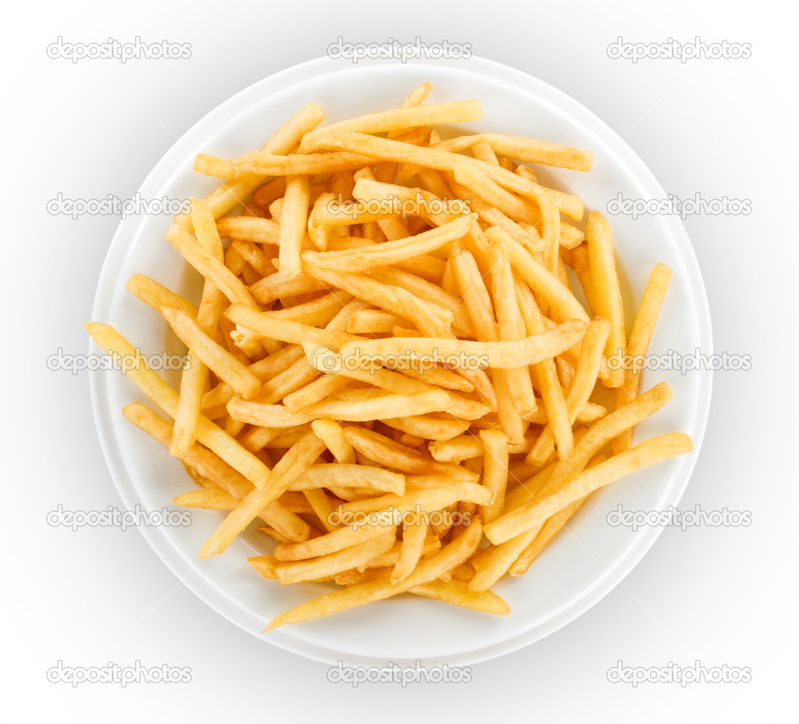

Patatas Fritas
Receta de patatas fritas

Ingredientes
3 ó 4 patatas (300g)
4 dientes de ajo
Aceite de oliva
Sal
Elaboracion (Pasos)
Calentar aceite en una sarten
Añadir las patatas cortadas, la sal y los ajos
Freir al gusto
Servir en un plato